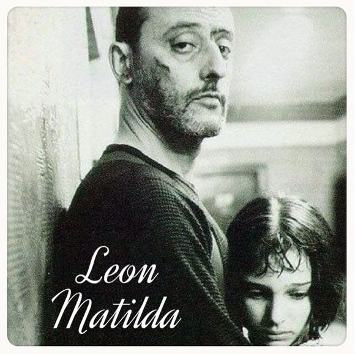

这个杀手不太冷片尾曲-Shape Of My Heart
歌曲简介：
《Shape of My Heart》是老牌摇滚歌手Sting的经典作品。被收录在其专辑《十个传奇》中。同时此曲还是1994年电影《这个杀手不太冷》（法语Leon 英语 Professional）中的片尾曲。此曲将纸牌中的四种花色分别对应成权力（梅花）、金钱（方片）、武力（黑桃），心（红桃）。"heart"一语双关，反映了杀手孤独的内心，配合上Sting低沉略带沙哑的声音，被演绎得天衣无缝。
Shape of My Heart
演唱：Sting
-Music-
He deals the cards as a meditation
And those he plays never suspect
He doesn't play for the money he wins
He doesn't play for respect
他出牌时冥想沉思
他的对手从未怀疑
他玩牌不为赢取金钱
也不为收获敬意
He deals the cards to find the answer
The secret geometry of chance
The hidden law of probable outcome
The numbers lead a dance
他在牌局中寻找答案
神秘莫测的几何概率
可能结果的隐藏法则
数据引思维翩翩起舞
I know that the spades are the swords of a soldier
I know that the clubs are weapons of war
I know that the diamonds mean money for this art
But that's not the shape of my heart
我知道黑桃是士兵手中刃
我知道梅花是战争之兵器
我知道方块意味着这棋局艺术里的财富
但那不是我要的红桃（但那并非我心之形）
He may play the jack of diamonds
He may lay the queen of spades
He may conceal a king in his hand
While the memory of it fades
他也许会出方块J
他可能下注黑桃Q
又或者 他会藏起手中的K
而同局者将它遗忘
I know that the spades are the swords of a soldier
I know that the clubs are weapons of war
I know that diamonds mean money for this art
But that's not the shape of my heart
That's not the shape, the shape of my heart
我知道黑桃是士兵手中刃
我知道梅花是战争之兵器
我知道方块意味着这棋局艺术里的财富
但那不是我要的红桃（但那并非我心之形）
那不是我要的红桃（那并非我心之形）
And if I told you that I loved you
You'd maybe think there's something wrong
I'm not a man of too many faces
The mask I wear is one
如果我说我爱你
你也许觉得不对劲
我并不是多面的人啊
我的面具始终如一
Those who speak know nothing
And find out to their cost
Like those who curse their luck in too many places
And those who fear lost
多言的牌手却一无所知
只是斤斤计较自己得失
正如到处咒骂自己背运的人
还有胆小如鼠害怕输局的人
I know that the spades are the swords of a soldier
I know that the clubs are weapons of war
I know that diamonds mean money for this art
But that's not the shape of my heart
But that's not the shape of my heart
That's not the shape, the shape of my heart
我知道黑桃是士兵手中刃
我知道梅花是战争之兵器
我知道方块意味着这棋局艺术里的财富
但那不是我要的红桃（但那并非我心之形）
但那不是我要的红桃（但那并非我心之形）
那不是我要的红桃（那并非我心之形）
...
-End-点击这里 下载这首歌(Flac)

回到文章索引